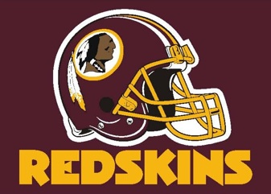

Welcome!
Welcome to the Redskins Fan Blog Site!
The Washington Redskins are an American football team based in the United States from Washington, D.C. They are a member of the East Division of the National Football Conference (NFC) in the National Football League (NFL). Its headquarters and training facility are at Redskins Park in Ashburn, Virginia. The Redskins have played more than 1,000 games since 1932. The Redskins have won five NFL Championships (two pre-merger, and three Super Bowls). The franchise has captured 13 NFL divisional titles and six NFL conference championships.
